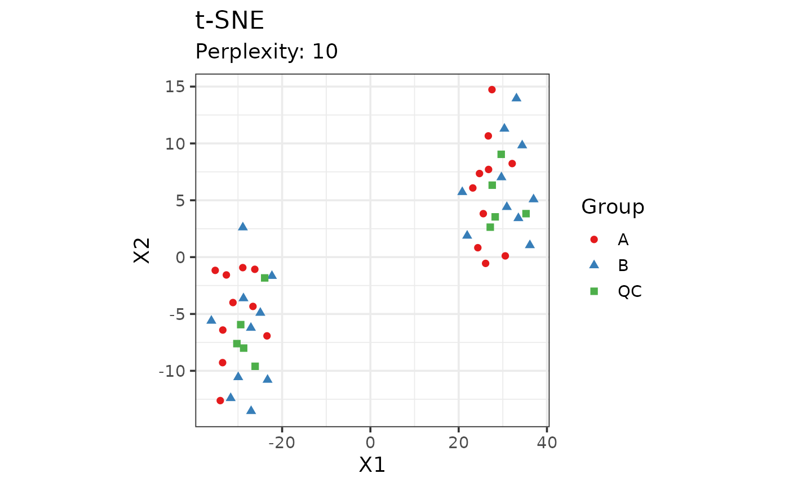

This function lists citations for all the major packages used by the notame
functions that have been called during the session. All notame functions
update the list automatically. The citations are taken from the call to
'citation("package"), and complemented with a brief description of
what the package was used for.
NOTE: the citations might not point to the correct paper if the package
authors have not supplied correct citation information for their package.
The output is written to the current log file, if specified.
Examples
citations()
#> INFO [2025-06-23 22:36:25] Preprocessing and analyses were performed using notame package:
#> INFO [2025-06-23 22:36:25] To cite package ‘notame’ in publications use:
#> INFO [2025-06-23 22:36:25]
#> INFO [2025-06-23 22:36:25] Klavus, A.; Kokla, M.; Noerman, S.; Koistinen, V.M.; Tuomainen, M.;
#> INFO [2025-06-23 22:36:25] Zarei, I.; Meuronen, T.; Hakkinen, M.R.; Rummukainen, S.; Farizah
#> INFO [2025-06-23 22:36:25] Babu, A.; Sallinen, T.; Karkkainen, O.; Paananen, J.; Broadhurst, D.;
#> INFO [2025-06-23 22:36:25] Brunius, C.; Hanhineva, K. "notame": Workflow for Non-Targeted LC-MS
#> INFO [2025-06-23 22:36:25] Metabolic Profiling. Metabolites 2020, 10, 135.
#> INFO [2025-06-23 22:36:25]
#> INFO [2025-06-23 22:36:25] A BibTeX entry for LaTeX users is
#> INFO [2025-06-23 22:36:25]
#> INFO [2025-06-23 22:36:25] @Article{,
#> INFO [2025-06-23 22:36:25] title = {"notame": Workflow for Non-Targeted LC-MS Metabolic Profiling},
#> INFO [2025-06-23 22:36:25] author = {Anton Klavus and Marietta Kokla and Stefania Noerman and Ville M. Koistinen and Marjo Tuomainen and Iman Zarei and Topi Meuronen and Merja R. Hakkinen and Soile Rummukainen and Ambrin {Farizah Babu} and Taisa Sallinen and Olli Karkkainen and Jussi Paananen and David Broadhurst and Carl Brunius and Kati Hanhineva},
#> INFO [2025-06-23 22:36:25] year = {2020},
#> INFO [2025-06-23 22:36:25] journal = {Metabolites},
#> INFO [2025-06-23 22:36:25] volume = {10},
#> INFO [2025-06-23 22:36:25] number = {135},
#> INFO [2025-06-23 22:36:25] url = {https://doi.org/10.3390/metabo10040135},
#> INFO [2025-06-23 22:36:25] doi = {10.3390/metabo10040135},
#> INFO [2025-06-23 22:36:25] }
#> INFO [2025-06-23 22:36:25] notame is built on a class from Biobase package:
#> INFO [2025-06-23 22:36:25] To cite package ‘Biobase’ in publications use:
#> INFO [2025-06-23 22:36:25]
#> INFO [2025-06-23 22:36:25] Orchestrating high-throughput genomic analysis with Bioconductor. W.
#> INFO [2025-06-23 22:36:25] Huber, V.J. Carey, R. Gentleman, ..., M. Morgan Nature Methods,
#> INFO [2025-06-23 22:36:25] 2015:12, 115.
#> INFO [2025-06-23 22:36:25]
#> INFO [2025-06-23 22:36:25] A BibTeX entry for LaTeX users is
#> INFO [2025-06-23 22:36:25]
#> INFO [2025-06-23 22:36:25] @Article{,
#> INFO [2025-06-23 22:36:25] author = {W. Huber and V. J. Carey and R. Gentleman and S. Anders and M. Carlson and B. S. Carvalho and H. C. Bravo and S. Davis and L. Gatto and T. Girke and R. Gottardo and F. Hahne and K. D. Hansen and R. A. Irizarry and M. Lawrence and M. I. Love and J. MacDonald and V. Obenchain and A. K. {Ole's} and H. {Pag`es} and A. Reyes and P. Shannon and G. K. Smyth and D. Tenenbaum and L. Waldron and M. Morgan},
#> INFO [2025-06-23 22:36:25] title = {{O}rchestrating high-throughput genomic analysis with {B}ioconductor},
#> INFO [2025-06-23 22:36:25] journal = {Nature Methods},
#> INFO [2025-06-23 22:36:25] year = {2015},
#> INFO [2025-06-23 22:36:25] volume = {12},
#> INFO [2025-06-23 22:36:25] number = {2},
#> INFO [2025-06-23 22:36:25] pages = {115--121},
#> INFO [2025-06-23 22:36:25] url = {http://www.nature.com/nmeth/journal/v12/n2/full/nmeth.3252.html},
#> INFO [2025-06-23 22:36:25] }
#> INFO [2025-06-23 22:36:25] visualizations in notame are built with ggplot2:
#> INFO [2025-06-23 22:36:25] To cite ggplot2 in publications, please use
#> INFO [2025-06-23 22:36:25]
#> INFO [2025-06-23 22:36:25] H. Wickham. ggplot2: Elegant Graphics for Data Analysis.
#> INFO [2025-06-23 22:36:25] Springer-Verlag New York, 2016.
#> INFO [2025-06-23 22:36:25]
#> INFO [2025-06-23 22:36:25] A BibTeX entry for LaTeX users is
#> INFO [2025-06-23 22:36:25]
#> INFO [2025-06-23 22:36:25] @Book{,
#> INFO [2025-06-23 22:36:25] author = {Hadley Wickham},
#> INFO [2025-06-23 22:36:25] title = {ggplot2: Elegant Graphics for Data Analysis},
#> INFO [2025-06-23 22:36:25] publisher = {Springer-Verlag New York},
#> INFO [2025-06-23 22:36:25] year = {2016},
#> INFO [2025-06-23 22:36:25] isbn = {978-3-319-24277-4},
#> INFO [2025-06-23 22:36:25] url = {https://ggplot2.tidyverse.org},
#> INFO [2025-06-23 22:36:25] }
data(example_set)
plot_tsne(example_set, perplexity = 10, group = "Group", color = "Group")

# Rtsne added to citations
citations()
#> INFO [2025-06-23 22:36:26] Preprocessing and analyses were performed using notame package:
#> INFO [2025-06-23 22:36:26] To cite package ‘notame’ in publications use:
#> INFO [2025-06-23 22:36:26]
#> INFO [2025-06-23 22:36:26] Klavus, A.; Kokla, M.; Noerman, S.; Koistinen, V.M.; Tuomainen, M.;
#> INFO [2025-06-23 22:36:26] Zarei, I.; Meuronen, T.; Hakkinen, M.R.; Rummukainen, S.; Farizah
#> INFO [2025-06-23 22:36:26] Babu, A.; Sallinen, T.; Karkkainen, O.; Paananen, J.; Broadhurst, D.;
#> INFO [2025-06-23 22:36:26] Brunius, C.; Hanhineva, K. "notame": Workflow for Non-Targeted LC-MS
#> INFO [2025-06-23 22:36:26] Metabolic Profiling. Metabolites 2020, 10, 135.
#> INFO [2025-06-23 22:36:26]
#> INFO [2025-06-23 22:36:26] A BibTeX entry for LaTeX users is
#> INFO [2025-06-23 22:36:26]
#> INFO [2025-06-23 22:36:26] @Article{,
#> INFO [2025-06-23 22:36:26] title = {"notame": Workflow for Non-Targeted LC-MS Metabolic Profiling},
#> INFO [2025-06-23 22:36:26] author = {Anton Klavus and Marietta Kokla and Stefania Noerman and Ville M. Koistinen and Marjo Tuomainen and Iman Zarei and Topi Meuronen and Merja R. Hakkinen and Soile Rummukainen and Ambrin {Farizah Babu} and Taisa Sallinen and Olli Karkkainen and Jussi Paananen and David Broadhurst and Carl Brunius and Kati Hanhineva},
#> INFO [2025-06-23 22:36:26] year = {2020},
#> INFO [2025-06-23 22:36:26] journal = {Metabolites},
#> INFO [2025-06-23 22:36:26] volume = {10},
#> INFO [2025-06-23 22:36:26] number = {135},
#> INFO [2025-06-23 22:36:26] url = {https://doi.org/10.3390/metabo10040135},
#> INFO [2025-06-23 22:36:26] doi = {10.3390/metabo10040135},
#> INFO [2025-06-23 22:36:26] }
#> INFO [2025-06-23 22:36:26] notame is built on a class from Biobase package:
#> INFO [2025-06-23 22:36:26] To cite package ‘Biobase’ in publications use:
#> INFO [2025-06-23 22:36:26]
#> INFO [2025-06-23 22:36:26] Orchestrating high-throughput genomic analysis with Bioconductor. W.
#> INFO [2025-06-23 22:36:26] Huber, V.J. Carey, R. Gentleman, ..., M. Morgan Nature Methods,
#> INFO [2025-06-23 22:36:26] 2015:12, 115.
#> INFO [2025-06-23 22:36:26]
#> INFO [2025-06-23 22:36:26] A BibTeX entry for LaTeX users is
#> INFO [2025-06-23 22:36:26]
#> INFO [2025-06-23 22:36:26] @Article{,
#> INFO [2025-06-23 22:36:26] author = {W. Huber and V. J. Carey and R. Gentleman and S. Anders and M. Carlson and B. S. Carvalho and H. C. Bravo and S. Davis and L. Gatto and T. Girke and R. Gottardo and F. Hahne and K. D. Hansen and R. A. Irizarry and M. Lawrence and M. I. Love and J. MacDonald and V. Obenchain and A. K. {Ole's} and H. {Pag`es} and A. Reyes and P. Shannon and G. K. Smyth and D. Tenenbaum and L. Waldron and M. Morgan},
#> INFO [2025-06-23 22:36:26] title = {{O}rchestrating high-throughput genomic analysis with {B}ioconductor},
#> INFO [2025-06-23 22:36:26] journal = {Nature Methods},
#> INFO [2025-06-23 22:36:26] year = {2015},
#> INFO [2025-06-23 22:36:26] volume = {12},
#> INFO [2025-06-23 22:36:26] number = {2},
#> INFO [2025-06-23 22:36:26] pages = {115--121},
#> INFO [2025-06-23 22:36:26] url = {http://www.nature.com/nmeth/journal/v12/n2/full/nmeth.3252.html},
#> INFO [2025-06-23 22:36:26] }
#> INFO [2025-06-23 22:36:26] visualizations in notame are built with ggplot2:
#> INFO [2025-06-23 22:36:26] To cite ggplot2 in publications, please use
#> INFO [2025-06-23 22:36:26]
#> INFO [2025-06-23 22:36:26] H. Wickham. ggplot2: Elegant Graphics for Data Analysis.
#> INFO [2025-06-23 22:36:26] Springer-Verlag New York, 2016.
#> INFO [2025-06-23 22:36:26]
#> INFO [2025-06-23 22:36:26] A BibTeX entry for LaTeX users is
#> INFO [2025-06-23 22:36:26]
#> INFO [2025-06-23 22:36:26] @Book{,
#> INFO [2025-06-23 22:36:26] author = {Hadley Wickham},
#> INFO [2025-06-23 22:36:26] title = {ggplot2: Elegant Graphics for Data Analysis},
#> INFO [2025-06-23 22:36:26] publisher = {Springer-Verlag New York},
#> INFO [2025-06-23 22:36:26] year = {2016},
#> INFO [2025-06-23 22:36:26] isbn = {978-3-319-24277-4},
#> INFO [2025-06-23 22:36:26] url = {https://ggplot2.tidyverse.org},
#> INFO [2025-06-23 22:36:26] }
#> INFO [2025-06-23 22:36:26] Rtsne package was used for t-SNE figures:
#> INFO [2025-06-23 22:36:26] To cite package ‘Rtsne’ in publications use:
#> INFO [2025-06-23 22:36:26]
#> INFO [2025-06-23 22:36:26] Jesse H. Krijthe (2015). Rtsne: T-Distributed Stochastic Neighbor
#> INFO [2025-06-23 22:36:26] Embedding using a Barnes-Hut Implementation, URL:
#> INFO [2025-06-23 22:36:26] https://github.com/jkrijthe/Rtsne
#> INFO [2025-06-23 22:36:26]
#> INFO [2025-06-23 22:36:26] L.J.P. van der Maaten and G.E. Hinton. Visualizing High-Dimensional
#> INFO [2025-06-23 22:36:26] Data Using t-SNE. Journal of Machine Learning Research
#> INFO [2025-06-23 22:36:26] 9(Nov):2579-2605, 2008.
#> INFO [2025-06-23 22:36:26]
#> INFO [2025-06-23 22:36:26] L.J.P. van der Maaten. Accelerating t-SNE using Tree-Based
#> INFO [2025-06-23 22:36:26] Algorithms. Journal of Machine Learning Research 15(Oct):3221-3245,
#> INFO [2025-06-23 22:36:26] 2014.
#> INFO [2025-06-23 22:36:26]
#> INFO [2025-06-23 22:36:26] To see these entries in BibTeX format, use 'print(<citation>,
#> INFO [2025-06-23 22:36:26] bibtex=TRUE)', 'toBibtex(.)', or set
#> INFO [2025-06-23 22:36:26] 'options(citation.bibtex.max=999)'.